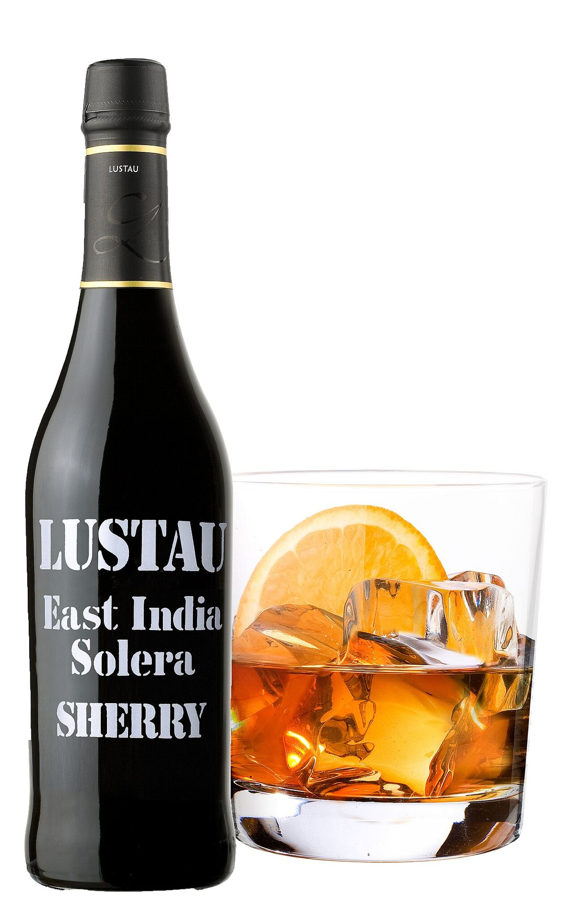
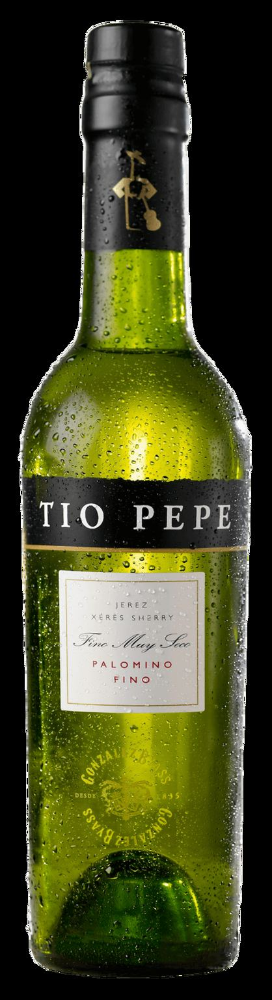

FORTIFIED
Jerez-Xérès-Sherry, in the province of Cádiz, is the designation of origin for sherry, made mainly from Palomino and aged in the criaderas and solera system. Its range runs from biologically aged finos to olorosos and sweet Pedro Ximénez.

Viticulture in the Jerez area dates back to antiquity, linked to the Phoenician presence in Cádiz and to Roman times. From the late Middle Ages Jerez wines were exported to England and other European ports, and trade with northern Europe, in which many British families settled in the area took part, shaped their development for centuries. The English word sherry derives from the name Jerez. It was one of the first designations of origin to be regulated in Spain, in the 1930s. The Regulatory Council shares its management with the Manzanilla-Sanlúcar de Barrameda DO, which covers the manzanillas aged in that town.
The production area includes municipalities in the province of Cádiz such as Jerez de la Frontera, El Puerto de Santa María, Sanlúcar de Barrameda, Chipiona, Trebujena, Rota, Puerto Real and Chiclana de la Frontera, as well as Lebrija in Seville. Ageing, however, may only take place in Jerez, El Puerto de Santa María and Sanlúcar, the so-called sherry triangle. The climate is warm, with many hours of sunshine, mild winters and rainfall concentrated in autumn and winter. Two winds influence the area: the humid, cool poniente from the Atlantic, and the hot, dry levante.
The most characteristic soil is albariza, white in colour and rich in calcium carbonate, which retains winter rainfall and releases it to the vine during summer. The albariza vineyards are grouped into traditional sites known as pagos, such as Macharnudo, Carrascal, Balbaína and Añina. There are also clay and sandy soils, considered less suitable for quality.
Palomino is the dominant variety; Pedro Ximénez and Moscatel are used mainly for sweet wines. The wines are fortified with grape spirit and aged in oak casks using the criaderas and solera system, which blends wines of different ages in stages. In biological ageing the wine is protected by a veil of yeast called flor; in oxidative ageing the higher alcohol level prevents the flor from developing and the wine evolves in contact with oxygen.
The dry fortified wines are fino, biologically aged; amontillado, which combines biological and oxidative ageing; oloroso, oxidatively aged; and palo cortado, which joins the aromatic finesse of amontillado with the structure of oloroso. The naturally sweet wines are Pedro Ximénez and Moscatel, while the blended fortified wines, such as Pale Cream, Medium and Cream, are made by combining dry and sweet wines. The terms VOS and VORS indicate an average age of more than 20 and 30 years respectively.





